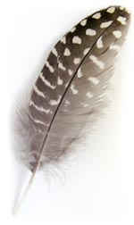

por Tom Payne, con agradecimiento a Catherine Willmond y Pamela Munro.

El chickasaw es una lengua indígena americana de la familia muskogui. Actualmente hay unos 3,000 hablantes fluidos de chickasaw, y la mayoría vive en Oklahoma. Sin embargo, cuando los europeos llegaron a Norteamérica, la tierra del pueblo chickasaw estaba en lo que hoy es Alabama y Misisipi. Otras lenguas muskoguis son el choctaw, el alabama, el natchez y el seminola. El pariente más cercano del chickasaw es el choctaw.
Nota: el sonido que se escribe ã es una vocal «nasalizada». Se pronuncia como la «a» de «papá», pero dejando pasar el aire por la nariz, como en la palabra francesa «ban».
| 1. Ofi'at kowi'ã lhiyohli. | 'El perro persigue al gato.' |
| 2. Kowi'at ofi'ã lhiyohli. | 'El gato persigue al perro.' |
| 3. Ofi'at shoha. | 'El perro apesta.' |
| 4. Ihooat hattakã hollo. | 'La mujer ama al hombre.' |
| 5. Lhiyohlili. | 'Yo lo/la persigo.' |
| 6. Salhiyohli. | 'Él/ella me persigue.' |
| 7. Hilha. | 'Él/ella baila.' |
Ahora ya puedes traducir lo siguiente al chickasaw. Como la «ã» nasalizada es muy importante en chickasaw, tienes que escribirla donde haga falta. Hay varias formas de hacerlo; una es simplemente copiar y pegar esta → ã. El apóstrofo (') de algunas palabras chickasaw también es muy importante: